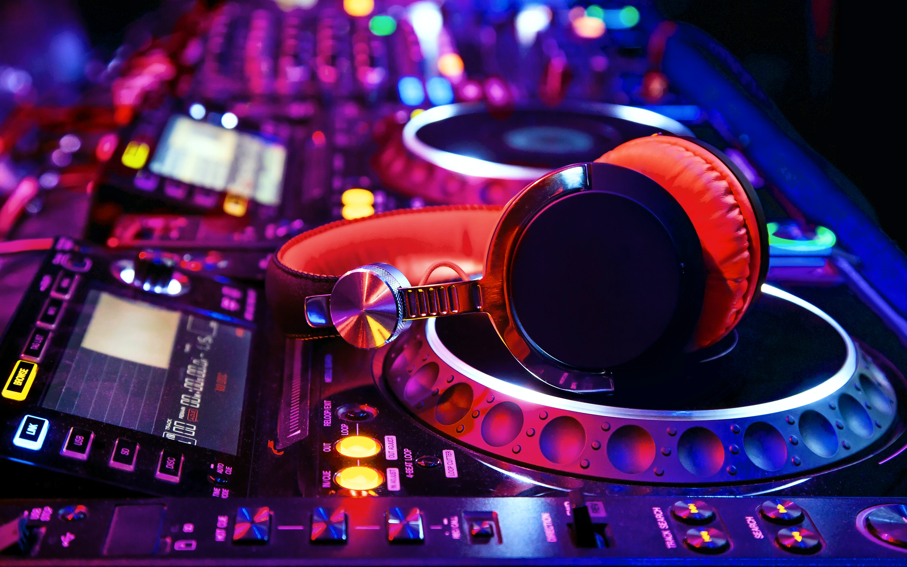

Sobre os DJs
Nosso fã-clube é dedicado a celebrar os melhores DJs do mundo, conectando fãs de música eletrônica de todos os cantos. Aqui, você encontrará informações sobre os DJs mais renomados, suas carreiras, estilos musicais e contribuições para a cena da música eletrônica.
Nosso objetivo é criar uma comunidade vibrante onde os amantes da música eletrônica possam compartilhar suas paixões, discutir as últimas tendências e celebrar a arte dos DJs que fazem a diferença no cenário musical global.
Reconhecimentos Internacionais

Os DJs de música eletrônica mais famosos do mundo acumulam prêmios e reconhecimentos por seu talento, criatividade e impacto global. O ranking DJ Mag Top 100 é um dos mais respeitados do cenário, mas há também Grammys, MTV Awards e outros troféus importantes. Abaixo, confira uma tabela comparando algumas das premiações mais marcantes de grandes nomes como David Guetta, Martin Garrix, Avicii, Zedd, Tiësto, Armin van Buuren, Calvin Harris e Alok.
| # | DJ | País | DJ Mag Top 100 #1 | Grammy | MTV Awards | Outros Destaques |
|---|---|---|---|---|---|---|
| 1 | David Guetta | França | 2011, 2020 | 2 | 5 | Billboard Music Awards, NRJ Music Awards |
| 2 | Avicii | Suécia | -- | 1 (póstumo) | 2 | American Music Award, Billboard, Grammy Sueco |
| 3 | Zedd | Alemanha | -- | 1 | 1 | Teen Choice, Billboard Music Award |
| 4 | Tiesto | Holanda | 2002, 2003, 2004 | 1 | 2 | DJ Awards, IDMA, Grammy Latino |
| 5 | Armin van Buuren | Holanda | 2007-2010, 2012 | 0 | 1 | IDMA, Buma Awards |
| 6 | Calvin Harris | Reino Unido | -- | 0 | 2 | Brit Awards, iHeartRadio Music Awards |
| 7 | Alok | Brasil | -- | 0 | 1 | Prêmio Multishow, MTV MIAW |
| 8 | Martin Garrix | Holanda | 2016, 2017, 2018 | 0 | 3 | Dutch DJ Awards, MTV Europe Music Awards |